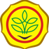
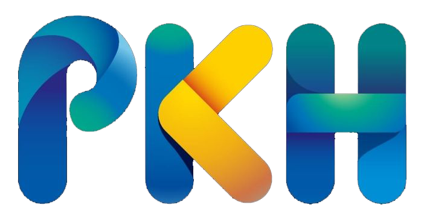
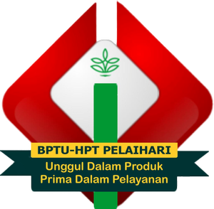
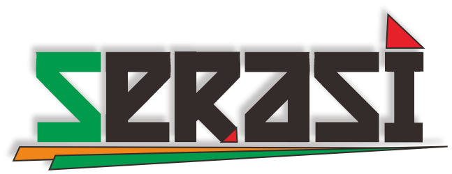
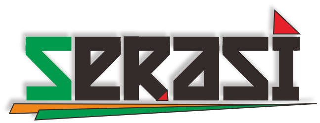

--- Kebijakan Mutu ---
Balai Pembibitan Ternak Unggul dan Hijauan Pakan Ternak Pelaihari berorientasi menjadi pusat keunggulan (Centre of Excellent) PRODUKSI BIBIT UNGGUL KAMBING, SAPI DAN ITIK, menetapkan kebijakan mutu:
- Meningkatkan kemandirian dan profesionalisme di bidang pembibitan ternak kambing Peranakan Ettawa, bibit sapi Madura, bibit induk itik Mojosari muda dan meri, bibit induk itik Alabio muda dan meri yang berkualitas.
- Senantiasa melaksanakan bimbingan teknis dan konsultansi pembibitan kambing dan itik melalui layanan prima.
- Menjadi pusat data base bibit ternak unggul kambing, sapi dan itik nasional.
- Senantiasa meningkatkan kualitas SDM, teknologi dan metode yang relevan untuk memperbaiki efektifitas sistem manajemen.
- Berorientasi kepada peningkatan kinerja yang berkelanjutan untuk menjamin Kepuasan Pelanggan.
Kebijakan mutu ini akan selalu ditinjau untuk kesesuaiannya dan harus dipahami oleh seluruh personil BPTU-HPT Pelaihari, serta menjadi kerangka kerja untuk menetapkan dan meninjau sasaran mutu.
--- Maklumat Pelayanan ---
"Dengan ini kami menyatakan sanggup menyelenggarakan pelayanan sesuai standar pelayanan yang telah ditetapkan dan apabila tidak menepati janji ini,Kami siap menerima sangsi sesuai dengan perundang-undangan yang berlaku"
--- Janji Layanan ---
Janji layanan merupakan sikap dan tindakan yang harus direalisasikan dalam wujud nyata dalam memberikan pelayanan pendidikan yang disesuaikan dengan Misi Balai.
Janji layanan Balai Pembibitan Ternak Unggul dan Hijauan Pakan Ternak Pelaihari adalah:

SEnyum
Senyum mengandung makna ungkapan rasa senang dan bahagia dalam melayani
RAmah
Ramah mengandung makna adanya kebaikan hati, manisnya tutur kata dan sikap, berbahasa yang baik dan menyenangkan dalam pergaulan selama memberikan pelayanan.
Santun
Santun mengandung makna sabar, sopan dan suka menolong dalam melayani sehingga sesuatu yang sulit dibikin mudah, dan sesuatu yang mudah tidak dibikin sulit.
Ikhlas
"Ikhlas mengandung makna bahwa sikap melayani dengan senyum, ramah dan santun semata-mata karena menjalankan ibadah kepada Allah SWT serta bertaqarrub (mendekatkan diri) kepada Allah SWT untuk mendapatkan keridhaan-Nya."